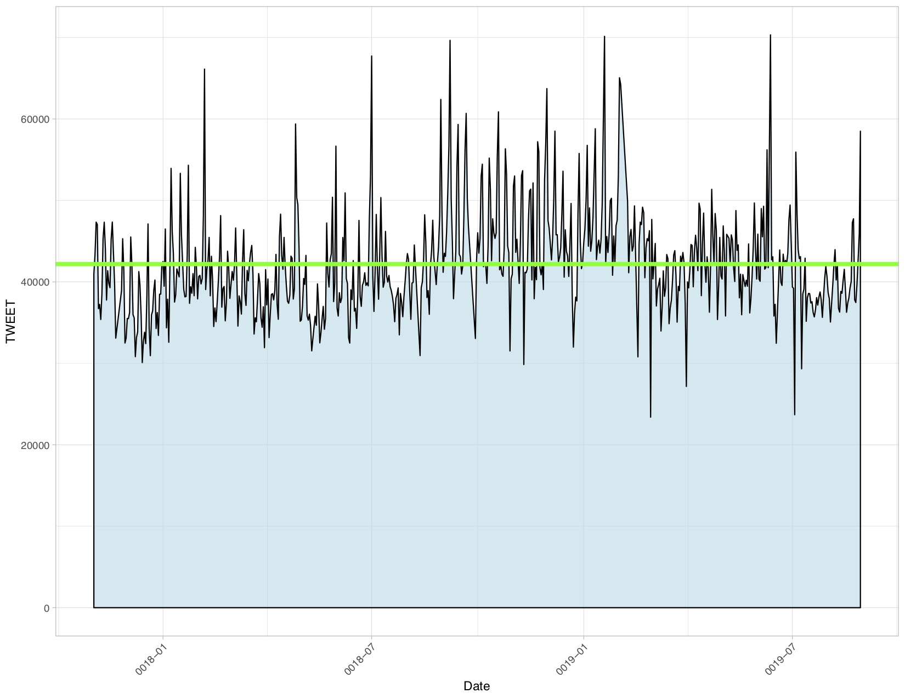
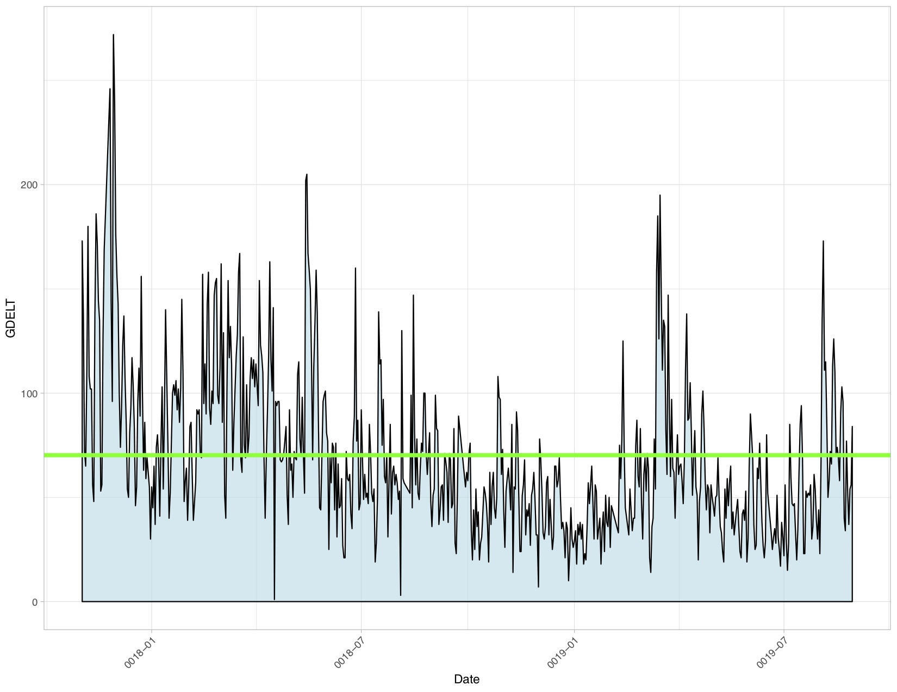
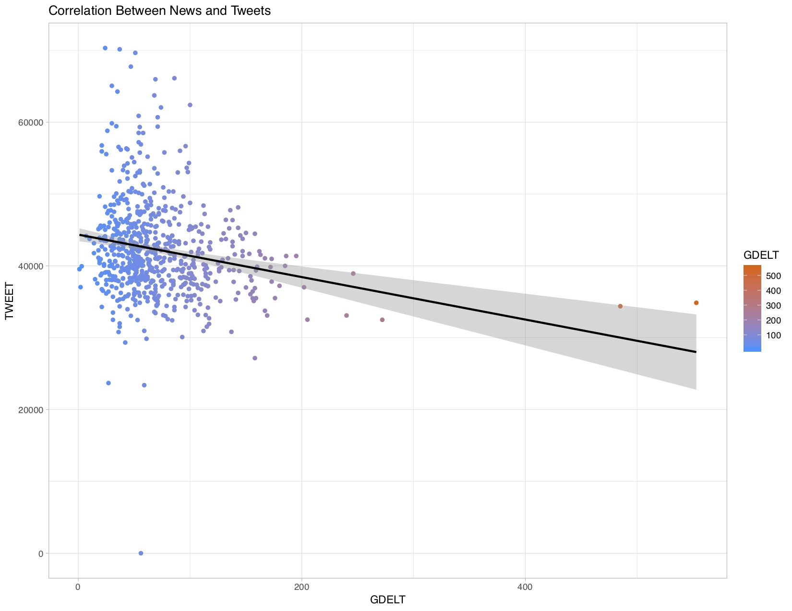
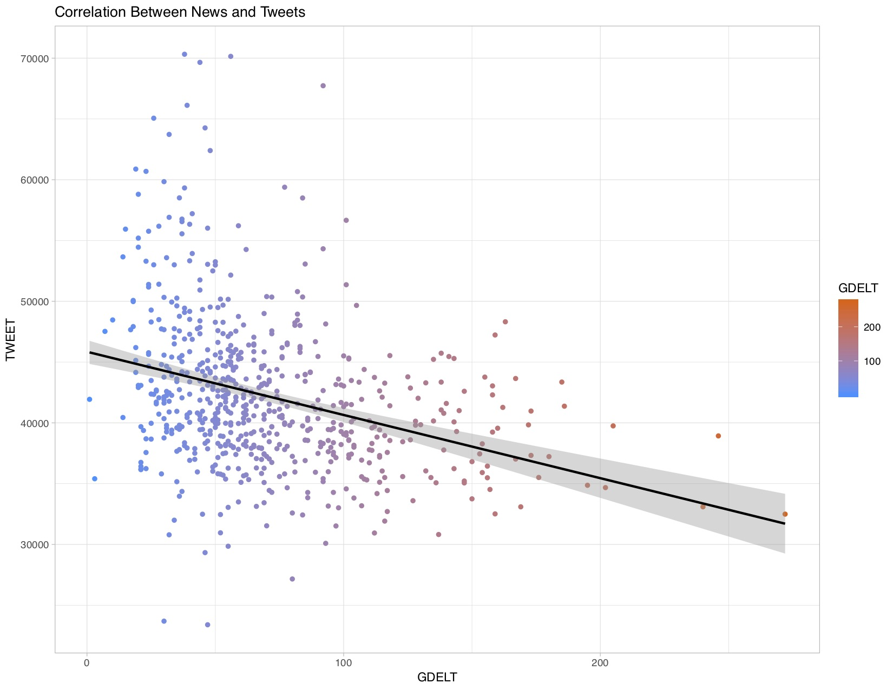
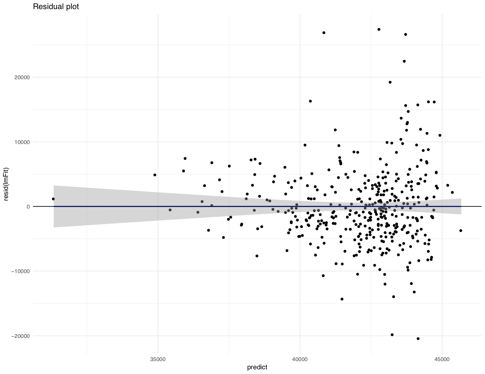
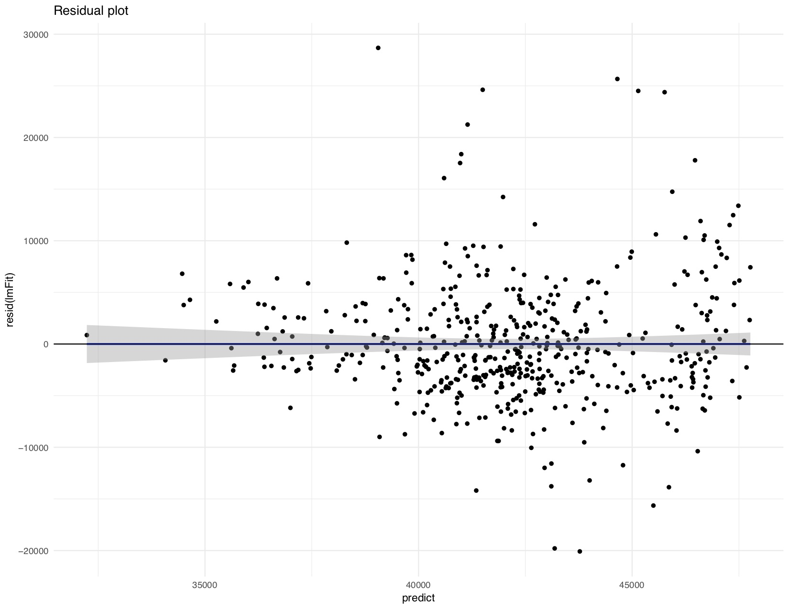
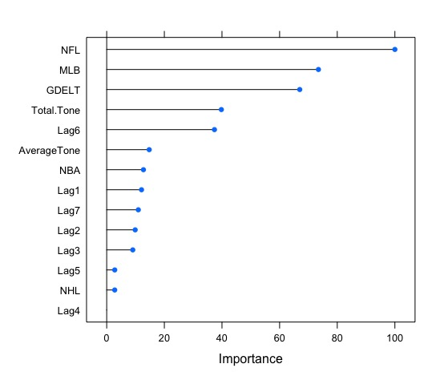
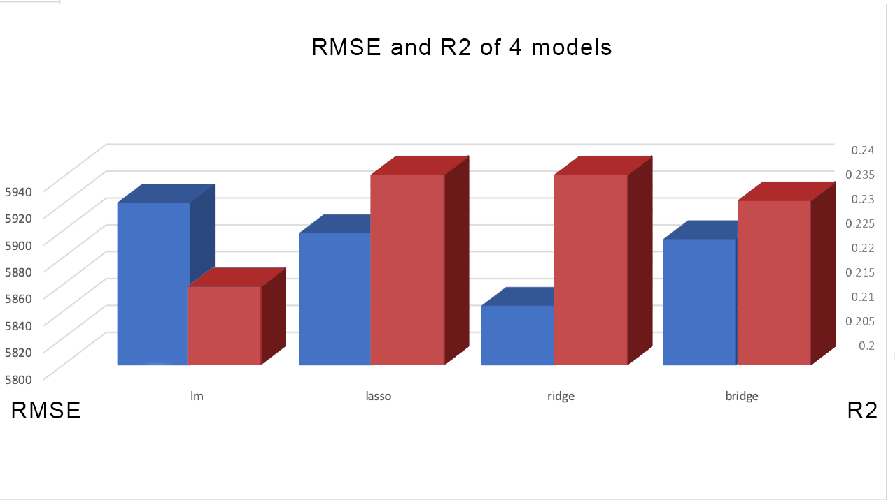
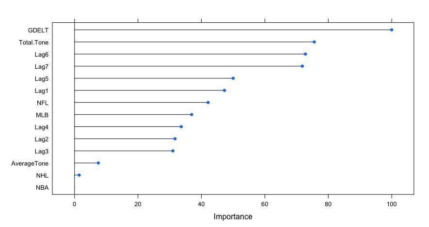

Bread and Circuses: Do we seek out sports as a distraction during times of international crisis?
Jacob Adolphe
tl;dr I used linear models to anlayze the correlation between news reports of violence and tweets about sports. Findings show that a rise in negative news articles may have a negative effect on sports tweets. However, the findings are inconclusive
The Hypothesis
The saying "Bread and Circuses" is an old Roman phrase meaning the distraction of the public with food and entertainment. Roman politicans sought to keep the public distracted from politics
with events like chariot races and gladiator competitions. I was curious to see if a similar system existed today. With our interconnected world we receive news, good and bad, from far
reaches of the world. I beleive that a greater number of negative news articles would result in higher sports engagement on social media.
The Problem
There are a vast number of tweets that are sent out every second from all over the world. It would be impossible to any person to read through all the tweets
and classify them as sports related or not. Further, we are constantly bombarded with news from dozens of outlets around the world. The purpose of this project
is to write a program to analyze the relationship between news and sports automatically.
The Data
For this project I used the twitter data downloaded by Professor Mike Izbicki. I wrote a python script, framework provided by Professor Izbicki, to run through the twitter dataset
and count the number of tweets involving sports by searching for keywords within the tweet text (1). The figure below shows the number of sports related tweets over the past two years:

I used the Global Database of Events Language and Tone (GDELT) for the half of my dataset involving the news (2). The GDELT dataset provided by the GDELT Project constantly reads and classifies
news articles from around the world. The GDELT project is able to find locations of news events, the type of event reported, countries involved, tone of the article, and many more attributes.
GDELT seperate events into categories called Conflict and Mediation Event Observation (CAMEO) event codes. These codes range from least violent, Code 1 = public statement, and most violent Code 20 = Use of Unconvential Violence. For this project I focused on the most violent
news articles. I filtered down the six years of GDELT data to only include news articles that qualifed for a CAMEO Code 20. The following chart shows the number of Code 20 GDELT articles over the same time period:

Global Scale of the Data
 Our world is incredibly interconnected, this is just a small random sample of the articles from dataset. This figure shows how different countries and states are connected by news articles.
This interconnection leads me to believe that news articles will have an effect on the daily lives of people all around the globe. The twitter dataset has incredible potential to
provide insight into the daily lives of people around the world. As you can see from these three figures, I was able to obtian twitter data from nearly every continent. However, this
figure also shows some of the drawbacks of using twitter data, there are very few tweets out of China, the most populus country in the world. This is becasue China doesn't really use twitter,
they use a different microblogging website called Weibo. Further, the dataset is limited by the keywords I chose. I focused on tweets regarding the main American sports leagues, teams and sports. There will be overlap
with other countries becasue I looked for keywords such as "football" and "soccer".
Our world is incredibly interconnected, this is just a small random sample of the articles from dataset. This figure shows how different countries and states are connected by news articles.
This interconnection leads me to believe that news articles will have an effect on the daily lives of people all around the globe. The twitter dataset has incredible potential to
provide insight into the daily lives of people around the world. As you can see from these three figures, I was able to obtian twitter data from nearly every continent. However, this
figure also shows some of the drawbacks of using twitter data, there are very few tweets out of China, the most populus country in the world. This is becasue China doesn't really use twitter,
they use a different microblogging website called Weibo. Further, the dataset is limited by the keywords I chose. I focused on tweets regarding the main American sports leagues, teams and sports. There will be overlap
with other countries becasue I looked for keywords such as "football" and "soccer".

Inital Model
I began analyzing the relationship between news and sports by training a linear regression model on the dataset (3). The independent variable was the number of news articles per date and the dependent variable was the number
of sports related tweets each day. This simple regression shows that the an increase in the number of violent news articles results in a slight decrease in the number of tweets about sports. A single increase in news articles is correlated with a decrease of around 33 tweets per day. This seems to disprove my inital hypothesis; however, I felt that my analysis wasnt complete. This model only explains 5% of the variablity in the data. Essentially, the model is terrible. The following graph shows a scatter plot of the dataset:

As we can see from this plot, we have a few outliers, there was one day with zero tweets about sports and there were two days with over 400 occurances of violent news articles. The day without any tweets about sports can be chalked up to an error in reading the
file containing the tweets for that day. However, the points with a very large number of GDELT articles can be attributed to reports of ethnic cleansing in Myanmar around November 22, 2017. I removed the outliers
from the dataset and retrained the linear model on the cleaned dataset. This new model more accurate, this new model explained 10% of the variation in the dataset (6). Further, this new model finds that
that a single unit increase in violent news articles results in a 52 tweet decrease in sports tweets. Testing this model on a validation set, I found that my model was off by about 6,200 tweets on average.

I felt confident that this was the best result I was going to get from the single regression. So, using the caret package, I created a residual graph visualizing the model's linear prediction error. This graph shows how far away
the model is from the actual data at every point. Ideally, the residual plot should have points randomply dispersed around the y = 0 line. However, the graph below shows the data points in a fan-shaped pattern. This means the bigger the
the predicted value is, the less accurate it is.

This graph means that we cannot trust the result of our model, i.e. the 52 tweet decrease is most likely not accurate. In order to improve the accuracy of the linear model I added several more dimensions in an attempt to reduce the bayes error and increased the number of datapoints in my training set to reduce the estimation error.
Improved Model
Luckily the GDELT project dataset had already extracted valueable information from the news articles it collected (6). One of the data fields was the tone of the article, the tone metric ranges from -100 to +100 with negative values representing negative tone and a positive value representing a positive tone. I hypothesized that a negative article
tone would further depress the number of tweets about sports based on the previous model's analysis. So I added total tone for the day, the thought is that in people are bombarded with many articles with negative tones they would tweet less, I also controlled for average article tone in my new model. Further, since I believe tweets about sports may be seasonal and the number of fans for each American sports league differs, I controlled for the seasons of each major sports league.
Finally, based on an article from NeimanLab, I estimated that the news cycle for these events is seven days. As such, I lagged the GDELT dataset seven times to see how the past week's news articles affected the present number of tweets. Finally, I increased the number of data points in my training set from ~400 data points to ~500 (7). For final analysis, I took the natural
log of the number of tweets to find the percentage change of the independent variable (8).


What's Important?
Not all predictors are created equally, I generated the plot below to visualize which variables are the most important to the training of the model.

This plot shows that the NFL season was the most important factor in the training of the model followed the my MLB season and the GDELT dataset.
What does this tell us?
In short, almost nothing about the correlation between violent news articles and tweets about sports. Yes, the final model is 99% sure that the number of violent news articles
has an negative effect on the number of tweets about sport. However, the change is so incredibly small that it is very hard to pull any meaningful conclusions from this project. The Root Mean Squared Error for the final model was a little less than 6000 tweets, meaning most of the actual data falls within +/- 6000 tweets of the predicted data. In simpler terms, on average, the model is off by about 6000 tweets (9).
This results of this project were not totally useless however, this project shows the limitations of using Twitter Data. As the very first figure shows, the tweets about sports were
incredibly volatile. Further, the seasonality of the American sports leagues was the greatest driver behind tweet changes. The only statistically significat independent variables were the number of violent news articles, the 5th and 7th lag of news articles, NFL and MLB season. Even after finding the percent change in tweets by taking the natural log of the tweets.
However, a single increase in violent news articles results in a 1/10% decrease in tweets about sports. The greatest statistically significat driver behind tweets was the NFL season, during the NFL season, controlling
for all other variables, tweets about sports increased by 5%.
Can we do better?
For the previous models, I used a simple linear model. The basic linear model weights all of the predictive values equally, this means there is room for improvement. In the CS145 course
we learned about three more extensions to linear models: lasso, ridge, and bridge. Lasso models essentially gets rid the irrelevant predictive values. Ridge regressions add bias to the estimates in hope of reducing errors. The bridge regression makes the coefficents less volatile by weighting them towards zero.
I ran the dataset on each of the three additional models and tested them to see which was the most accurate. The plot below shows the performance of each model on the validation dataset.

This figure shows that the ridge model was the most accurate out of the four (10). It had the lowest error and the highest r-squared value. We can see below that the importance of each variable changed as well. Now the most important predictor is the GDELT Dataset.

Technical Appendix
1. The twitter data was pulled from a server using a python script that searched for specific keywords in the each tweet. I made all the characters lowercase to reduce the number of keywords needed. These keywords
included the names of all the United States sports, sports leagues, every team in each league, and sports related words such as 'espn' and 'ncaa'. Initially,
I was going to include player names; however I figured there would be enough overlap between the keywords above and player names that it wouldn't be worth
the time. For example a tweet about Steph Curry will probably include the word 'baskeball' or 'nba' or 'golden state warriors'
2. The GDELT dataset wall pulled from the GDELT project website. I used the online query tool to download every instance of a Code 20 article since 2008. There were a few technical limitations,
I was only able to pull 10,000 articles at once with the online query tool so I made around 25 different querys to gather my full dataset. In retrospect, I didn't use the data before 2017 so I spent a lot of
time gathering data I didn't need.
3. For all of my model training I used the caret R package
4. The inital single regression model had an R-squared value of ~.05 depending on the random dataset used for training
5. The second single regression model had an R-squared value of ~.10 depending on the randiom dataset used for training
6. I added 13 additional dimensions to the data: 7 lags representing the news cycle, total tone of articles for the day, average tone of the articles for the day (calculated by dividing total tone by number of articles per day), and binary variables representing the NFL, NBA, NHL, and MLB seasons.
7. My inital training partition had 60% of the dataset ~400 points. I increased the number of datapoints to 80% of the dataset ~500 points
8. I performed a log transformation of the dependent variable to estimate the percentage change of the dependent variable controlling for the predictors. I did this transformation using the 'log1p' function in R.
9. I tested the accuracy of my model on the validation by running the model on the independent variables of the validation
dataset to predict 128 tweet counts. Then I used the postResample() method from the caret package to calculate the Root Mean Squared Error between the predicted values and the actual values from the validation dataset.
10. R calculated an optimal lambda value of 0.1 for the lasso model
Sources
Mike Izbicki: https://github.com/mikeizbicki/cmc-csci145-math166
R caret package: Max Kuhn, Jed Wing, Steve Weston, Andre Williams, Chris Keefer, Allan Engelhardt, Tony Cooper, Zachary Mayer, Brenton Kenkel, the R Core Team, Michael Benesty, Reynald Lescarbeau, Andrew Ziem, Luca Scrucca, Yuan Tang, Can Candan, and Tyler Hunt.: http://topepo.github.io/caret/index.html
NeimanLabs: https://www.niemanlab.org/2019/01/a-typical-big-news-story-in-2018-lasted-about-7-days-until-we-moved-on-to-the-next-crisis/
scikit learn: https://scikit-learn.org/